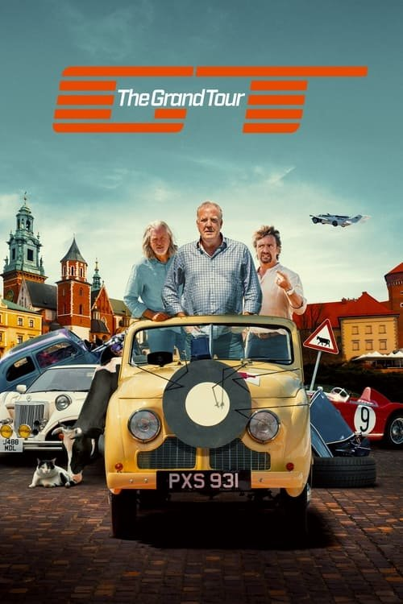

El gran tour (2016)
Sinopsis Rápida
Tres leyendas del automovilismo se embarcan en alocadas aventuras alrededor del mundo, llevando al límite sus coches y sus bromas. ¿Sobrevivirán a las pruebas y a su propia camaradería?
Sinopsis Detallada
El Gran Tour sigue a Jeremy Clarkson, Richard Hammond y James May en sus extravagantes viajes por el planeta, probando coches de lujo y participando en desafíos absurdos. La serie combina espectaculares paisajes con humor irreverente y rivalidades amistosas. Más allá del espectáculo visual, se explora la cultura local de cada destino con un toque sarcástico y peculiar. La química entre los presentadores es el motor principal de una serie que se ha convertido en un fenómeno global.
¿Por qué tenés que verla?
{{PUNTOS_CLAVE}}Idea Extra
Comparativa de los coches más extravagantes y caros conducidos en El Gran Tour.
{{CONTENIDO_RELACIONADO}}